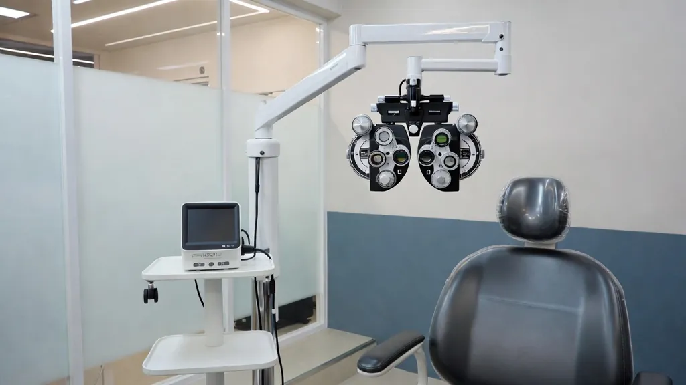
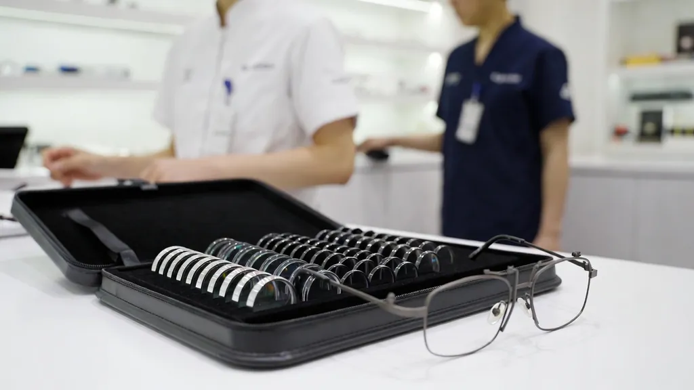

6. 검사 장비별 사용법·한계·오차 원인
핵심 포인트
- 장비는 '조건이 맞을 때 믿을 만한 숫자'를 주는 도구 – 한계와 오차 원인을 안다.
- 머리 기울임 = 축 오차, 깜빡임 부족 = 값 변동, PD 미세팅 = 원치 않는 프리즘.
- 포롭터 결과는 시험테로 최종 확인. 시력표 거리·거울 보정 확인.
이 페이지 차례
장비는 '정확한 숫자를 주는 기계'가 아니라 '조건이 맞을 때 믿을 만한 숫자를 주는 도구'입니다. 각 장비의 한계를 알아야 결과를 올바르게 해석할 수 있습니다. 세부 조작은 반드시 각 제조사 사용설명서를 따르십시오.
6.1 자동굴절검사기 (오토레프랙터)
| 항목 | 내용 |
|---|---|
| 무엇을 측정하나 | 눈에 적외선을 비춰 망막 반사광을 분석해 굴절값(S/C/Ax)을 자동 계산 |
| 사용 순서 | · 소독 → 턱·이마받침 위치 → 높이 조절 · 내부 시표를 편하게 보도록 안내 · 정렬(동공 중심, 초점) 확인 후 측정, 눈당 3회 이상 · 신뢰도 지수 확인, 대표값 기록 |
| 한계 | · 조절 개입으로 근시 과대 측정 경향(특히 아동·청년, 기계 근시) · 작은 동공·매질 혼탁(백내장 등) 시 측정 불가 또는 부정확 · 불규칙 각막(원추각막·수술 후)에서 신뢰도 저하 |
| 주요 오차 원인 | · 머리 기울임 → 축 오차 · 깜빡임 부족·눈물막 불안정 → 값 변동 · 콘택트렌즈 착용 상태에서 측정 · 정렬 불량(동공 중심 이탈) |
6.2 각막곡률계 (케라토미터/오토케라토)
| 항목 | 내용 |
|---|---|
| 무엇을 측정하나 | 각막 표면에 비친 상(마이어)의 크기로 각막 곡률반경(mm)·굴절력(D)과 주경선 방향 측정 |
| 사용 순서 | · 오토레프 겸용기는 동시 측정 · 수동식: 접안렌즈 초점 → 마이어 정렬 → 두 주경선 측정 · K1(약주경선)/K2(강주경선)와 축 기록 |
| 한계 | · 각막 중심부 일부의 앞면 곡률만 측정(주변부·뒷면·수정체 난시는 반영 안 됨) · 불규칙 난시는 정량이 어려움(마이어 왜곡으로 '의심'만 가능) |
| 주요 오차 원인 | · 눈물막 건조, 깜빡임 직후 불안정 · 정렬 오류, 주시 불량 · 각막난시로 전체난시를 추정하는 Javal 규칙 등은 근사식일 뿐(IACLE 자료) |
6.3 렌즈미터 (수동/자동)
| 항목 | 내용 |
|---|---|
| 무엇을 측정하나 | 안경 렌즈의 정점굴절력(S/C/Ax), 프리즘, 광학중심, ADD 측정 |
| 사용 순서 | · (수동) 접안렌즈 시도 조정 → 영점 확인 · 렌즈 뒷면을 받침에 밀착, 테 하단을 받침대에 대어 수평 유지 · 초점 맞추어 구면 → 원주 → 축 읽기 · 광학중심 점찍기, 프리즘 판독 · 다초점: 원용부·근용부 각각 측정 |
| 한계 | · 누진 렌즈는 원용·근용 측정점을 정확히 찾아야 함 · 착색·코팅·고굴절 렌즈에서 자동식 오차 가능 |
| 주요 오차 원인 | · 접안렌즈 미조정(수동) · 렌즈 앞뒤를 바꿔 측정 → 고도수에서 값 차이 · 안경 기울어짐 → 원주·축 오차 · 광학중심이 아닌 곳 측정 → 프리즘 혼입 |
6.4 포롭터 (검안기, Phoropter/Refractor)

| 항목 | 내용 |
|---|---|
| 무엇을 측정하나 | 구면·원주·프리즘·JCC·보조렌즈를 조합해 자각적 굴절검사를 하는 장치 |
| 사용 순서 | · 고객 PD 세팅, 수평(기포) 확인, 정점간거리 확인(각막 정렬창) · 이마받침에 이마 밀착, 렌즈 창 청결 · 검사 순서(3.6~3.10) 진행, 보조렌즈 다이얼(O/R/PH 등) 위치 확인 |
| 한계 | · 기계를 가까이 느껴 조절·폭주가 개입할 수 있음(근접 효과) · 렌즈가 실제 안경보다 멀고 경사각이 없음 → 최종 처방은 시험테로 확인 · 속눈썹 닿음, 시야 제한 |
| 주요 오차 원인 | · PD 미세팅 → 의도치 않은 프리즘 · 정점간거리 차이(고도수에서 유효도수 변화) · 포롭터 기울어짐 → 축 오차 · 보조렌즈 원위치 안 함 |
6.5 시험테와 시험렌즈 세트

| 항목 | 내용 |
|---|---|
| 무엇을 측정하나 | 실제 안경과 비슷한 조건에서 처방 확인·착용 테스트 |
| 사용 순서 | · PD, 코받침 높이, 정점간거리(대략 12mm 전후), 경사각 조정 · 렌즈 넣는 순서: 구면(특히 고도수)은 눈에 가장 가까운 칸, 원주는 축 회전이 가능한 앞쪽 칸 · 원·근·보행 테스트 |
| 한계 | · 렌즈를 여러 장 겹치면 유효 도수가 달라질 수 있음 · 렌즈 세트 마모·누락 |
| 주요 오차 원인 | · 원주 축 눈금 오독 · 렌즈 뒤집힘, 이물·지문 · 실제 안경과 정점간거리 차이 → 고도수에서 체감 차이(2.2 공식) |
6.6 검영기 (레티노스코프) – 안경원 사용 불가
| 항목 | 내용 |
|---|---|
| 무엇을 측정하나 | 반사광 움직임으로 원점을 찾아 굴절을 측정(3.5.2 원리) |
| 사용 순서 | · ※ 현행 시행령상 안경사의 타각적 굴절검사는 자동굴절검사기기 이용 검사로 한정 → 안경원 업무에서 사용하지 않음 · 교육 목적의 원리 이해만 |
| 한계 | · 숙련도 의존성이 큼 · 소동공·매질 혼탁 시 판독 어려움 |
| 주요 오차 원인 | · 작업거리 불일치(67cm와 50cm 혼동 시 0.50D 오차) · 축에서 벗어난 관찰 |
6.7 시력표 / 시표 투영기 (프로젝터, 모니터 시표)
| 항목 | 내용 |
|---|---|
| 무엇을 측정하나 | 시력 측정 및 자각 검사용 시표(문자·숫자·그림·란돌트 고리, 적록, 난시표, 편광 시표 등) |
| 사용 순서 | · 규격 거리(예: 5m/6m, 거울 이용 시 광학적 거리) 보정 확인 · 밝기·대비 정기 점검, 실내 조명 일정 · 시표 무작위 제시(암기 방지) · 아동·문자 미숙·외국인용 시표 준비 |
| 한계 | · 시표 종류(문자 vs 고리)에 따라 결과 차이 · 소형 매장은 거울 사용 → 좌우 반전·거리 보정 필요 |
| 주요 오차 원인 | · 거리 미보정 → 근시 교정량 판단 오류 · 시표 노후·흐림, 반사광 · 같은 줄 반복으로 외움 · 글자 간격(밀집 효과) 차이 |
6.8 PD 측정기 (동공거리계)
| 항목 | 내용 |
|---|---|
| 무엇을 측정하나 | 각막 반사점을 기준으로 단안 PD(원/근) 측정 |
| 사용 순서 | · 측정 거리(∞/40cm 등) 설정 · 고객이 내부 광점 주시, 커서를 각막 반사점에 정렬 · 2회 이상 측정, R/L 단안값 기록 |
| 한계 | · 사시·주시 불량 시 부정확 · 아동은 협조도에 따라 오차 |
| 주요 오차 원인 | · 코받침 위치 비대칭 → 단안값 오차 · 거리 설정 실수(원용을 근용으로 측정) · 검사자 시차 |
6.9 장비 일일·정기 점검표
☑ 체크리스트 (실습 평가표로 사용 가능)
자가 점검 퀴즈 (3문항)
보기를 누르면 바로 정답과 해설이 나와요. 기록은 저장되지 않아요.
문제 1
오토레프 측정 시 머리가 기울면 생기는 오차는?
💡 기울임 → 축 오차.
문제 2
포롭터 결과를 시험테로 최종 확인하는 이유는?
💡 실제 안경 조건에 가까운 시험테로 착용 테스트를 해요.
문제 3
좁은 매장에서 거울로 시력표를 볼 때 확인할 것은?
💡 거울은 거리를 두 배로 만들고 좌우를 바꿔요.